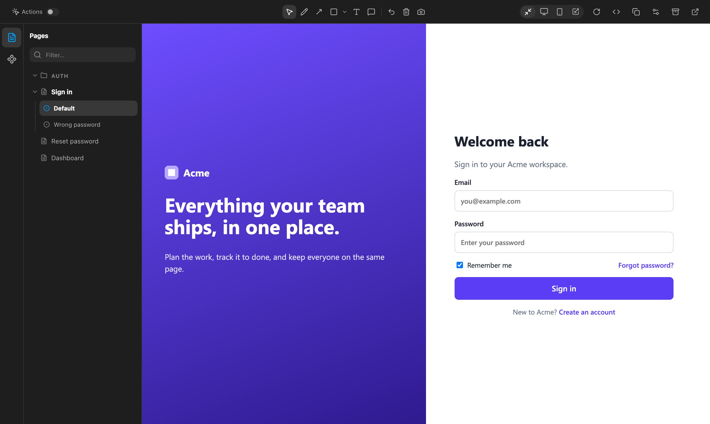
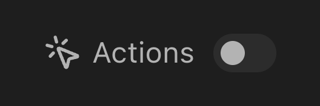
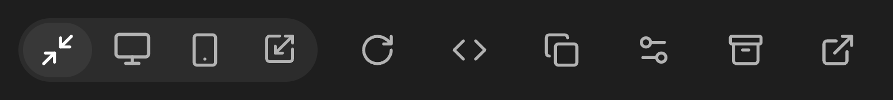
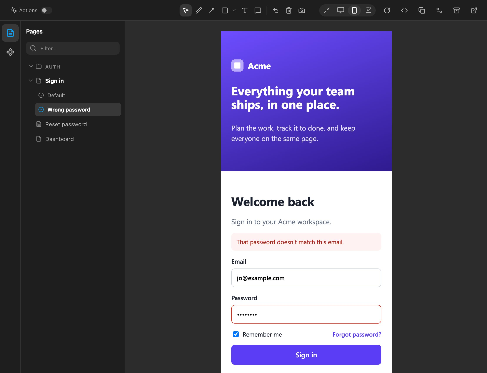

Every screen in your repo, on one canvas.
Canonic is a VS Code extension for the HTML you design in. List your pages and previews in one file, see each one at a real device width, draw on it, and hand the picture to your agent.

The workbench at a glance
Four areas, and nothing in them comes from your pages. Everything the workbench shows is read from workbench.yaml at the root of your project.
- 1Rail
One button per section in
workbench.yaml, such as Pages and Components, each with its own icon. - 2Screen list
The section's screens, with folders and a filter. A screen with states lists them underneath it. In VS Code this list sits in the sidebar, where the file tree usually goes.
- 3Toolbar
The Actions toggle on the left, markup tools in the middle, frame widths and screen actions on the right. When space runs short, secondary actions move into a More menu.
- 4Canvas
The screen itself, live, in a frame of the width you picked. It's your real page, not a picture of it.
The toolbar
Three groups across the top of the workbench: the Actions toggle, the markup tools, and the frame and screen controls. Point at or tap a control to see what it does.


Actions
Off by default, so clicking around a screen you’re reviewing doesn’t navigate you out of it. Turn it on to let links navigate and forms submit, and walk the real flow.
All controls
Interaction
- Actions
- Off by default, so clicking around a screen you’re reviewing doesn’t navigate you out of it. Turn it on to let links navigate and forms submit, and walk the real flow.
Only in some setups
- Lens switcher
- Design, then each implementation the screen has, when
workbench.yamldeclares implementations. See Lenses. - Story picker
- Beside the switcher under a Storybook lens, listing the title’s stories. Picks reuse the loaded preview.
- Copy handoff
- In VS Code only. See Markup and handoff.
- More (⋯)
- When the window is too narrow, the controls that don’t fit move into this menu.
Markup
- Select
- Use the page, and pick or move marks. Esc returns here from any drawing tool.
- Scribble
- Freehand drawing.
- Arrow
- Point at something.
- Shapes
- Rectangle by default. The small arrow beside it switches to a line or a circle.
- Text
- A label placed on the screen.
- Comment
- A pinned note, for feedback that needs more than a word.
- Undo
- Removes the last mark. ⌘Z or Ctrl Z.
- Clear markup
- Removes every mark on the screen.
- Save screenshot
- Downloads a JPEG of the screen with your marks on it.
Frame and screen
- Fit
- The frame fills whatever space the workbench has.
- Laptop
- 1512 × 982, a 14-inch MacBook Pro. The canvas scrolls rather than shrinking the page.
- Mobile
- 393 × 852, an iPhone 15 Pro.
- Resizable
- Drag an outside edge or corner to any size. The frame keeps that size until you change it.
- Reload
- Reloads the screen.
- Open the source
- Lists the screen’s design file and any implementation code, and opens one in the editor.
- Copy reference
- Copies a short text reference to the screen, state, and lens, for pasting into a conversation. It doesn’t include a screenshot or your markup.
- Configure pages
- A form for adding and removing sections and pages, editing labels and paths, and choosing each page’s viewports. It rewrites only the
sectionspart ofworkbench.yaml. - Design-system ZIP
- Exports every screen’s files, the sources they depend on, and a reference screenshot at each viewport, split into parts of 10 MB or less.
- Open on its own
- Opens the screen directly in a browser tab.
States
A screen is rarely one picture. Sign in has the empty form you land on and the one that comes back with a wrong password. Each state is listed under its screen, the way Storybook lists stories under a component.
Declare the states in workbench.yaml:
- label: Sign in
src: pages/sign-in.html
states:
- id: default
label: Default
- id: error
label: Wrong passwordThen have the page respond to the state. Match CSS on html[data-wb-state="error"], keep an element only in some states with data-wb-state-only="error", or fill in a value with data-wb-set-error="value=…". Your pages need no scripts added.

Markup and handoff
Draw on the screen to say what's wrong with it. Marks sit above the live page, so you can keep using it with Select.
In VS Code, Copy handoff saves the screenshot to the project's ignored .canonic/.handoffs/ folder, clears the markup, and copies a written account of every mark to the clipboard. The account says what's under each mark and which file the screen comes from. Paste it into any agent conversation.
Select a mark to move it, nudge it with the arrow keys, or delete it with Delete.
Lenses
A design screen is one picture of something that also exists as code. Declare where the code runs (a Storybook, a dev server, staging) and a lens switcher appears in the toolbar: Design first, then each implementation the screen has.
A lens shows the implementation in the same frame, at the same width, under the same marks. The choice stays as you move between screens, and the address carries it, so a copied link opens the same view:
A project can also configure a start command and a port or HTTP readiness check for a Storybook or local server. In a trusted VS Code workspace, Canonic opens a terminal and starts it only when the check fails.
#pages/sign-in.html:error@393~stagingpages/sign-in.html | the screen's design file |
:error | the state, left out for the default |
@393 | the frame: a device width, fit, or a resizable size |
~staging | the lens, left out for the design |
Install
Download the latest workbench release on GitHub. It has one .vsix file per platform; choose the one that matches your computer:
| Computer | File |
|---|---|
| Mac with Apple silicon (M1 and later) | canonic-workbench-darwin-arm64.vsix |
| Mac with Intel | canonic-workbench-darwin-x64.vsix |
| Windows | canonic-workbench-win32-x64.vsix |
| Windows on Arm | canonic-workbench-win32-arm64.vsix |
| Linux | canonic-workbench-linux-x64.vsix |
| Linux on Arm | canonic-workbench-linux-arm64.vsix |
- In VS Code, open the Extensions view, click ⋯, and choose Install from VSIX…. Or run
code --install-extension <file>.vsix. - Run Developer: Reload Window from the Command Palette.
- Add a
workbench.yamlat the root of your project:name: Acme sections: - name: Pages icon: file-text items: - label: Sign in src: pages/sign-in.html - Canonic appears in the activity bar and the status bar. Either one opens the canvas.
Canonic only turns on in a folder with a workbench.yaml. Delete that file and nothing else remains in your project.